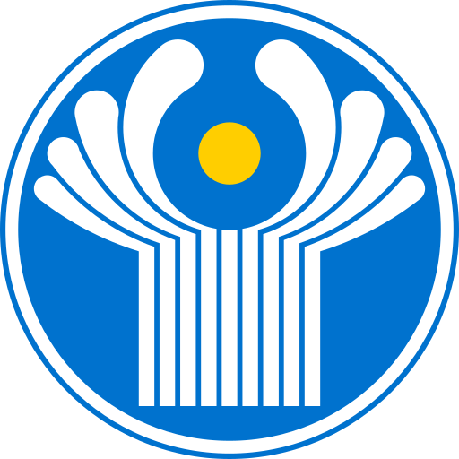
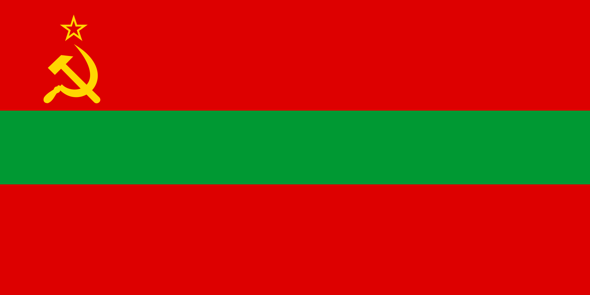

| Commonwealth of Independent States Содружество Независимых Государств |
||||||||||||||||||||||||

Flag

Emblem
| ||||||||||||||||||||||||
|
Location of the CIS
 Map of the CIS
Map of the CIS
| ||||||||||||||||||||||||
|
Commonwealth of Independent States¶
The Commonwealth of Independent States (CIS) is a supranational organisation established by the Minsk Agreements of 10 June 2025. It unites Russia, Ukraine, and Belarus in a common political, economic, and defence framework, conceived as a direct successor to the Soviet Union.
Unlike a loose diplomatic forum, the CIS is structured as a genuine integration project: borders between member states have been abolished, infrastructure systems are being standardised, and a collective defence doctrine binds members to treat any attack on one as an attack on the Commonwealth as a whole.
While the Pridnestrovian Moldavian Republic (PMR) took part in the Minsk talks, it was excluded from full membership due to its lack of international recognition. Instead, PMR participates as a partner region. All former Soviet republics are formally invited to join the CIS, though none have yet acceded.
The CIS presents itself as the political and institutional successor to the USSR, adopting a common flag and emblem, a shared parliament in Saint Petersburg, and integrated approaches to rail, energy, and defence coordination. Its guiding principle is not merely cooperation but the recreation of a common economic and strategic space in Eastern Europe and Eurasia.
History¶
Formation¶
The Commonwealth of Independent States was established on 10 June 2025 with the signing of the Minsk Agreements by Russia, Ukraine, and Belarus. The accords formalised the abolition of borders between the three countries, introduced shared infrastructure projects, and created a supranational framework for political and economic coordination.
Although Pridnestrovie participated in the talks, it was not admitted as a member, as the other signatories did not recognise it as a sovereign state. Instead, it was granted the status of partner region and included in selected cooperative projects.
From the outset, the CIS presented itself as the successor to the Soviet Union, not in ideology but in scope and ambition: a federation of sovereign states united in defence, economic policy, and shared cultural ties.
Expansion and invitations¶
The CIS charter left the door open to all former Soviet republics, explicitly inviting them to join on equal terms. While no additional members signed on during the summer of 2025, negotiations and informal contacts continued.
Structure and Institutions¶
- Interparliamentary Assembly – based in Saint Petersburg, this body acts as the legislative arm of the CIS, with representatives from member states empowered to draft common laws and ratify agreements.
- Council of Heads of Government – composed of the premiers of each member state, coordinating major executive decisions.
- Defence Coordination Committee – a supranational body tasked with overseeing military integration and joint planning. Its doctrine defines that there is no concept of an “attack on one state” — instead, any aggression is treated as an attack on the CIS as a whole.
Policies and Integration¶
- Border policy – All internal borders between members were abolished, enabling free movement of people, goods, and capital.
- Economic policy – While the Russian ruble remains the main currency, proposals for a common CIS currency have been tabled.
- Infrastructure – Priority has been given to railway integration, ensuring uninterrupted freight and passenger links across the bloc.
- Cultural cooperation – Shared initiatives in education, science, and cultural preservation emphasise the historical continuity of the CIS as the legitimate successor to the USSR.
Member States and Partners¶
| Flag | Country / Region | Status | Notes |
|---|---|---|---|
 |
Russia | Member | Founding signatory of the Minsk Agreements. |
 |
Ukraine | Member | Founding signatory of the Minsk Agreements. |
 |
Belarus | Member | Founding signatory of the Minsk Agreements. |
|  | Pridnestrovie | Partner (non-member) | Participated in Minsk talks but excluded due to non-recognition as a state. |